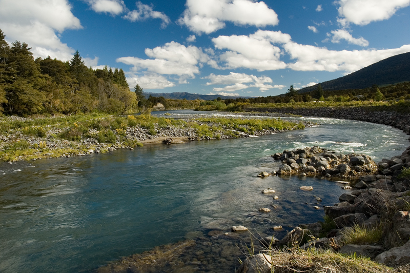
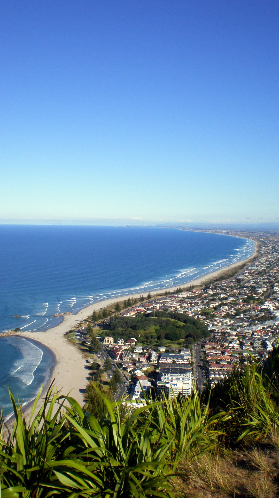
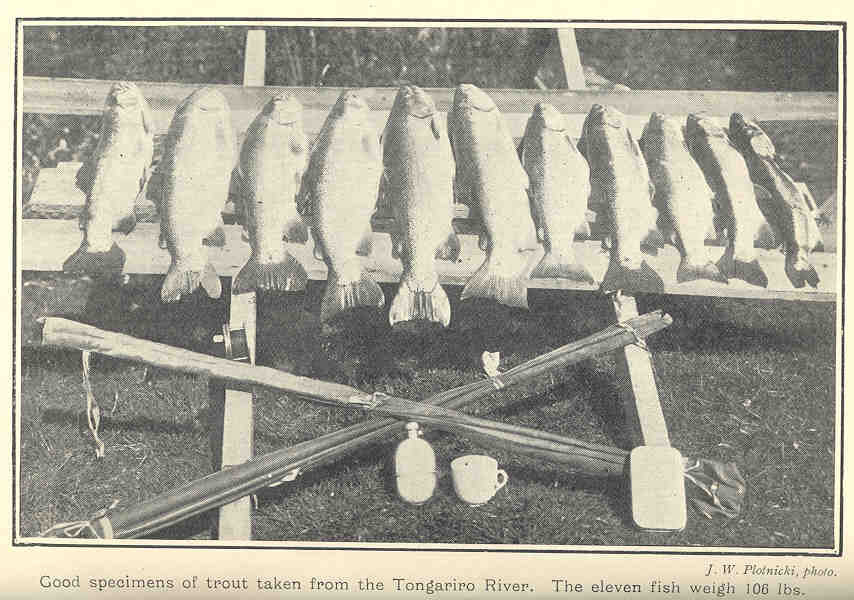

Fish NZ 10
10 days · 9 nights
- 5 trout days — Tongariro / Taupō
- 3 deep-sea days — Mt Maunganui
- Travel + rest days
- First-time NZ anglers
Land package · price TBD
Inquire
Trout · Deep sea · Hosted tours
The Alaska trip shape — fly water, then salt — on the other side of the Pacific. You book the flight. We handle New Zealand.
The idea
Fish NZ runs semi-budget hosted fishing tours for American anglers, especially retirees who want a longer trip without lodge-luxury pricing. International airfare is on you; ground transport, lodging, guides, group meals, and three dinners out are on us.
| Alaska reference | Fish NZ |
|---|---|
| Fly to Anchorage | Fly to Auckland (not included) |
| Lodge + guide + boat | Lodging, guides, charters, NZ transport included |
| Trout / salmon / halibut | Tongariro trout + Bay of Plenty deep sea |
| 7–14 days typical | 10, 14, or 21 day options |
| Premium lodge rates | Value tier — group cooking, clean stays |
Trip length
Minimum ten days because you are crossing the Pacific and fishing two different fisheries. Fourteen days is the core Alaska-comparable package. Twenty-one suits 60+ retirees who want weather buffer and extra water time.
10 days · 9 nights
Land package · price TBD
Inquire14 days · 13 nights · core trip
Land package · price TBD
Inquire21 days · 20 nights
Land package · price TBD
InquireGroup size target: 6–10 anglers per departure. Stripe deposit checkout will attach here once pricing is set.
Where we fish
Auckland arrival → south to the Central North Island rivers → north-east to the Bay of Plenty → depart. All in-country driving and shuttles included.
Fly and spin fishing on the Tongariro River system and Lake Taupō tributaries. Rainbow and brown trout, classic NZ nymphing and sight fishing. Base around Taupō / Turangi.

Bay of Plenty charters from Tauranga / Mt Maunganui. Snapper, kingfish, tarakihi, and seasonal tuna or marlin. Beach-town downtime between charter days.

Package details
Questions before you book
We're exploring a partnership with Matt Smith as the American-facing contact — club talks, pre-trip calls, and straight answers about gear, fitness, and why NZ instead of Alaska this year.
Ideal if you'd rather hear it from a midwestern angler than a brochure. Contact form below goes to the same inbox until Matt's line is live.
Book / inquire
Flights are not included — plan on flying into Auckland from your US hub (ORD, MSP, DEN, DFW, etc.). We'll confirm availability and send a Stripe deposit link when pricing is finalized.